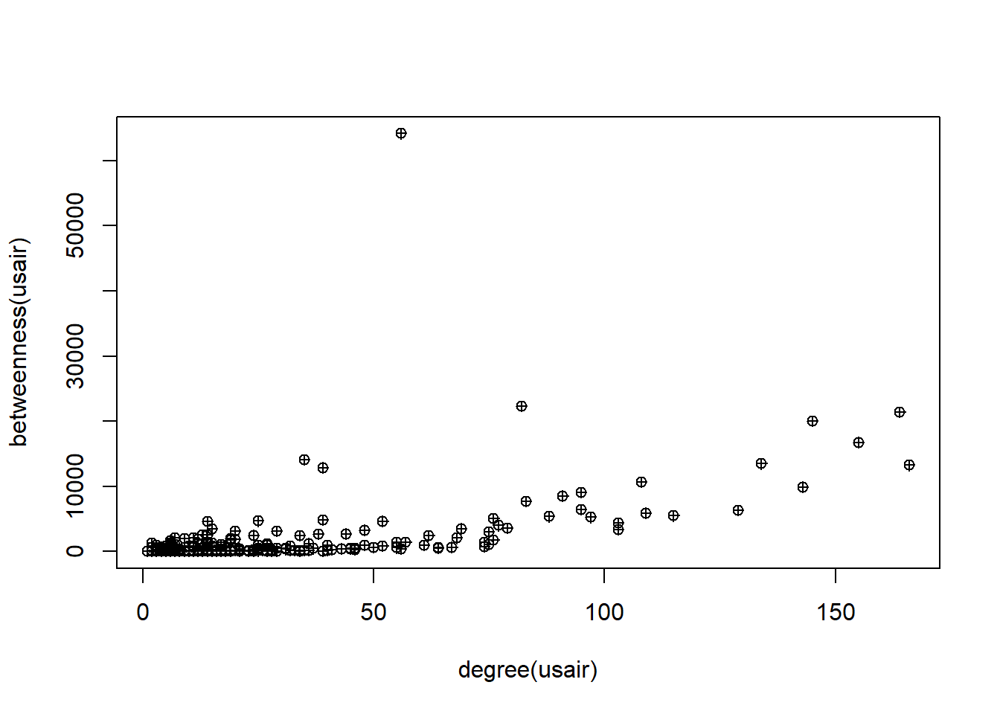
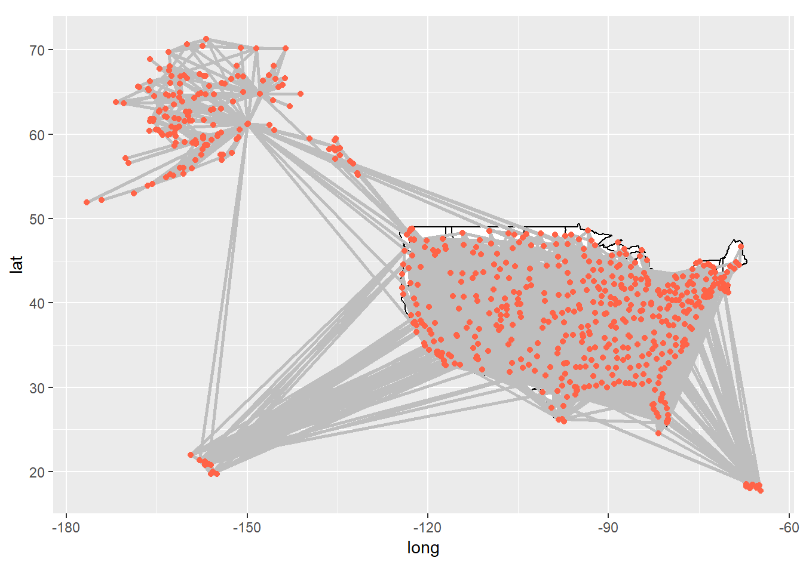
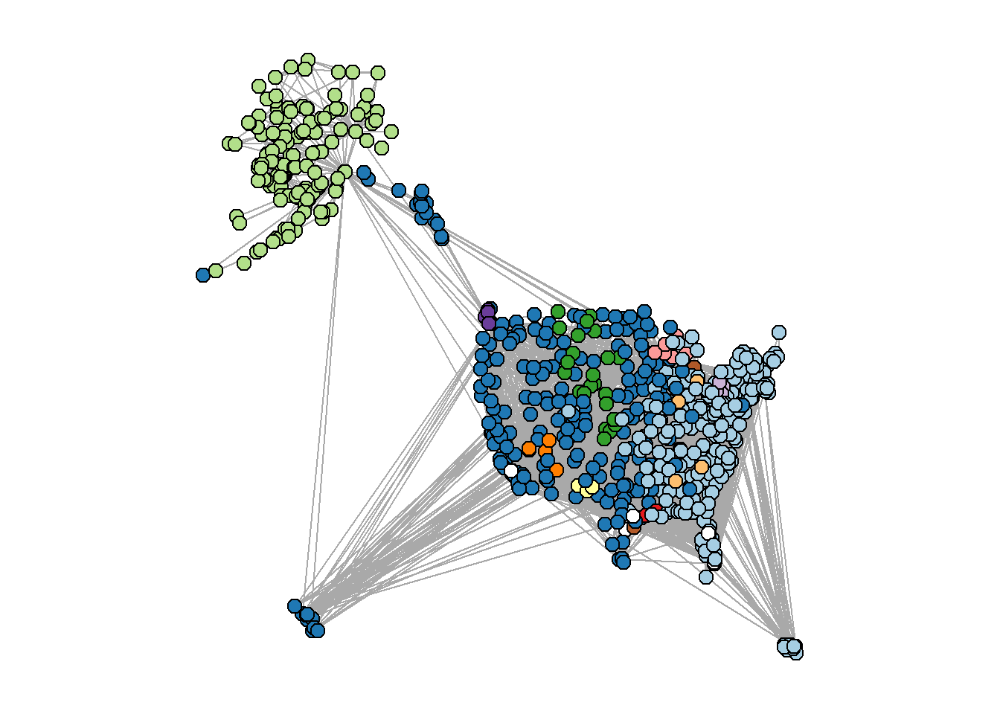

Considering a data analyst in the airline industry, I’ve been diving deep into the fascinating world of air transportation networks. Picture this: airports across the globe, each a bustling hub of activity, connected by a vast web of airline routes. This is our playing field, a prime example of a spatial network.
A few years back, a groundbreaking study by Guimerà and colleagues (2005) took a close look at this network. They explored the importance of each airport (or ‘node’) in the network, and how different measures can provide unique insights. They even proposed alternative ways of assessing the position of a node, shedding light on the diverse roles airports play in this complex network.
Now, imagine we’re conducting a ‘virtual knockout experiment’. It’s a bit like a game of Jenga, but instead of wooden blocks, we’re dealing with airports. We carefully remove one node at a time, observing the effects on the network. This isn’t just a game, though. These experiments are crucial for understanding how resilient our network is to disruptions.
Think about it. If an airport suddenly goes offline - due to a natural disaster, for instance - how does that impact the rest of the network? Can flights be rerouted efficiently? Do other airports become overloaded? These are the kinds of questions we’re seeking to answer.
And it’s not just the airline industry that benefits from this kind of analysis. Similar methods are used to study everything from power grids to social networks, and even the spatial networks of organisms. By understanding the potential impacts of node failure, we can make our networks more robust and resilient.
So, as we navigate the ever-changing landscape of the airline industry, we’re not just looking at numbers and routes. We’re telling the story of our network, understanding its strengths and weaknesses, and preparing for whatever the future may hold.
Acquisition and visualization of the US air transportation network
As a data analyst in the airline industry, I’ve been exploring the intricate tapestry of the US domestic air transportation network. Picture this: a bustling network of airports, each a hub of activity, connected by the invisible threads of flights. These threads, each representing a flight that took place in December 2010, weave together to form a complex and dynamic pattern.
This pattern, our network, is more than just a collection of airports and flights. It’s a snapshot of our industry’s heartbeat during that month. Each node, an airport, pulsates with life, sending out flights that ripple across the network. Each edge, a flight, is a connection, a link that ties our network together.
This dataset is our playground. It allows us to delve into the connectivity and dynamics of our air transportation system during that period. We can probe its structure, examine its function, and uncover the hidden patterns that lie beneath the surface.
So, as we navigate through this network, we’re not just looking at airports and flights. We’re embarking on a journey, a journey that takes us deep into the heart of our industry. We’re exploring the story of our network, a story that is woven with flights and etched in the hustle and bustle of airports. And as we unravel this story, we gain insights that help us understand our industry better and prepare for the future.
Code
library(igraph)
Warning: package 'igraph' was built under R version 4.1.3
Attaching package: 'igraph'
The following objects are masked from 'package:stats':
decompose, spectrum
The following object is masked from 'package:base':
union
Code
library(igraphdata)
Warning: package 'igraphdata' was built under R version 4.1.3
I’ve been working with the US domestic air transportation network dataset, a vibrant tapestry of airports and flights. Each airport, a bustling node in our network, has a “Position” attribute, a set of coordinates that pinpoints its location on the globe. But, like any good story, there’s a twist. Some of these positions might not be entirely accurate due to minor discrepancies in airport codes and coordinates.
So, I turned to the Open Flights project, a treasure trove of comprehensive airport location data. Picture me, a data detective, downloading this dataset directly from the web, ready to cross-verify our airport locations. This isn’t just about dotting the i’s and crossing the t’s. It’s about ensuring the story we tell with our data is as accurate and reliable as possible.
By integrating this external dataset, we’re not just enhancing the precision of our airport locations. We’re adding another layer of depth to our analysis, enabling us to paint a more accurate picture of our network. This way, we can conduct a more precise spatial analysis and visualization, bringing the story of our network to life in the most authentic way possible.
V1 V2 V3 V4
1 1 Goroka Airport Goroka Papua New Guinea
2 2 Madang Airport Madang Papua New Guinea
3 3 Mount Hagen Kagamuga Airport Mount Hagen Papua New Guinea
4 4 Nadzab Airport Nadzab Papua New Guinea
5 5 Port Moresby Jacksons International Airport Port Moresby Papua New Guinea
6 6 Wewak International Airport Wewak Papua New Guinea
V5 V6 V7 V8 V9 V10 V11 V12 V13
1 GKA AYGA -6.081690 145.392 5282 10 U Pacific/Port_Moresby airport
2 MAG AYMD -5.207080 145.789 20 10 U Pacific/Port_Moresby airport
3 HGU AYMH -5.826790 144.296 5388 10 U Pacific/Port_Moresby airport
4 LAE AYNZ -6.569803 146.726 239 10 U Pacific/Port_Moresby airport
5 POM AYPY -9.443380 147.220 146 10 U Pacific/Port_Moresby airport
6 WWK AYWK -3.583830 143.669 19 10 U Pacific/Port_Moresby airport
V14
1 OurAirports
2 OurAirports
3 OurAirports
4 OurAirports
5 OurAirports
6 OurAirports
I’ve been on a mission to bring our US air transportation network to life. And now, with the Open Flights project’s airport location data in hand, we’re ready to take the next step.
Imagine each airport as a character in our story. Each one has its own unique set of coordinates - its latitude and longitude - that tells us exactly where it’s located in the world. These coordinates, tucked away in columns 7 and 8 of our dataset, are about to take center stage.
We’re going to import this data and assign each airport its rightful place on the map. This isn’t just about getting the details right. It’s about ensuring that our story - the story of our network - is as accurate and authentic as possible.
With the correct latitude and longitude values associated with each airport, we can conduct a more precise spatial analysis and visualization of our network. This means our analyses and visualizations will truly reflect the real-world locations of our airports, enhancing the credibility and impact of our findings. It’s another step forward in our journey to understand and tell the story of our network.
I’ve been preparing our US air transportation network for its moment in the spotlight. But before it’s ready for its debut, we need to make sure it’s looking its best. That’s where our data cleanup steps come in.
First, we’re going to simplify the network. Think of it as decluttering a room. We’re removing any loops and converting the network into an undirected format. This will make our network easier to understand and eliminate any unnecessary complexities.
Next, we’re going to address any mismatched nodes. These are like the odd socks in a drawer - airport codes that don’t match up with the Open Flights database. By removing these, we’re ensuring the accuracy and consistency of our data.
Then, we’re going to zoom in on the main stage by excluding US territories in the Eastern and Southern Hemispheres. This will allow us to focus on the heart of the US domestic air transportation network, making our analysis clearer and more focused.
Finally, we’re going to spotlight the star of the show - the largest connected component, also known as the ‘giant component’. This is the most interconnected subset of our network, and by focusing on this, we can derive meaningful insights and simplify our analysis.
Once these steps are complete, we’ll be left with a refined network representation, which we’ll call “usair”. This will be our star performer, ready to take center stage in our subsequent analysis and visualization tasks. It’s through this refined lens that we’ll gain a deeper understanding of the intricate dance that is the US air transportation network.
Code
#remove loops and make undirectedusair=as.undirected(simplify(USairports))#remove airports whose codes didn't match the OpenFlights database (and hence returned "NA" for latitude)usair=delete.vertices(usair, which(is.na(V(usair)$lat)==TRUE))#remove nodes in the Eastern and Southern Hemispheres (US territories). This will make the plot easier to see.usair=delete.vertices(usair, which(V(usair)$lat<0))usair=delete.vertices(usair, which(V(usair)$long>0))#keep only the largest connected component of the network ("giant component"). this also makes the network easier to see.decomp=decompose.graph(usair)usair=decomp[[1]]
I’ve been working on a masterpiece: a refined representation of the US domestic air transportation network, affectionately named “usair”. This isn’t just a collection of airports and flights. It’s a story waiting to be told.
Imagine each airport as a character in our narrative, each flight a connection, a relationship. As we delve into the analysis of this network, we’re not just crunching numbers. We’re exploring the intricate web of relationships between our characters, uncovering the key patterns and dynamics that drive the story forward.
Through the lens of visualization, we can see the grand dance of air traffic across the US, the ebb and flow of flights between airports, the intricate choreography of our network. This is more than just a dance, though. It’s a window into the heart of our industry, a way to understand the complexities of our air transportation system.
As we continue our journey, we’ll delve deeper into the story, exploring the importance of each character, the resilience of our network, and other key metrics. Each step brings us closer to understanding the narrative of our network, the story of the US air transportation system.
Degree and Betweenness Centrality Relationship in the U.S. Airports Network
I’ve been using two trusty tools: degree centrality and betweenness centrality.
Imagine degree centrality as a measure of popularity. It tells us how many direct flights an airport has, reflecting its connectivity and accessibility. It’s like counting how many friends a character has in our story.
Betweenness centrality, on the other hand, is a measure of influence. It tells us how often an airport acts as a bridge between other airports, a crucial transfer hub in the network. It’s like tracking how many plotlines a character is involved in.
But, like any good story, there’s a twist. Our analysis uses a simplified network that only considers unique flight routes. It doesn’t take into account factors like the frequency of flights, replicated routes, or the size of aircraft. It’s a bit like focusing on the main plot and leaving out some of the subplots.
By examining these two measures, we can identify the key players in our network, understand the flow of air traffic, and assess the importance of each airport in connecting different regions of the country. It’s through this exploration that we can truly understand the narrative of our network and the roles each character plays in our story.
Code
plot(degree(usair), betweenness(usair), pch=10)

Imagine degree and betweenness centrality as two characters in our narrative, usually seen together, reflecting an airport’s popularity and influence. But there are a few airports, the mavericks of our story, that break this mold.
In the bustling world of U.S. domestic flights, one airport stands out. It doesn’t have the highest degree - it’s not the most popular character in our story. But it has a remarkably high betweenness centrality. This airport is like the unsung hero of our tale, quietly playing a critical role as a transfer hub, ensuring passengers move efficiently between different regions of the country.
This unique character in our network story highlights the fascinating complexities and unexpected dynamics within the U.S. air transportation system.
To examine notable points, let’s begin by exploring the top 10 airports based on their node degree.
Code
V(usair)$name[order(degree(usair), decreasing=T)][1:10] #order() gives us the element number in order of ranking.
The analysis reveals that the majority of the top 10 airports, based on node degree, are prominent hubs situated within the interior of the lower 48 states. It is important to note that international flights are not considered in this network. Consequently, the list includes well-known airports such as Atlanta (ATL), Denver (DEN), O’Hare (ORD), Minneapolis (MSP), Dallas-Ft. Worth (DFW), and others.
Top 10 Airports Based on Node Betweenness in the U.S. Airports Network
Code
V(usair)$name[order(betweenness(usair), decreasing=T)][1:10] #order() gives us the element number in order of ranking.
Among the top 10 airports with the highest betweenness centrality, several are already familiar from the analysis of node degree: Denver (DEN), Minneapolis (MSP), Chicago O’Hare (ORD), Detroit (DTW), Atlanta (ATL), and LAX. However, there are some unexpected inclusions: Anchorage (ANC) emerges as the airport with the highest betweenness centrality by a significant margin. Seattle (SEA), although a major airport, did not feature in the top 10 for node degree but ranks second in terms of betweenness centrality. Notably, two other airports from Alaska, Fairbanks (FAI) and Bethel (BET), also make the list. The presence of Bethel, located in a town with a population of approximately 6,000, is particularly intriguing.
The disparity between the top 10 nodes based on degree and betweenness centrality becomes evident when visualizing the network in geographical space using the downloaded coordinates data. By plotting the network, we can gain a better understanding of the underlying reasons behind this discrepancy.
A constellation of airports scattered across Alaska, each a beacon in the vast wilderness, a testament to the state’s reliance on air transportation due to its limited road infrastructure.
In our network story, these Alaskan airports might not be the most popular characters, with fewer direct flight connections than their counterparts in the lower 48. But there are a couple of key players, Anchorage in Alaska and Seattle in the contiguous U.S., that act as crucial bridges, connecting Alaska to the rest of the country.
These airports, with their high betweenness centrality, are like the unsung heroes of our tale. They may not have the most connections, but they play a disproportionate role in facilitating travel between Alaska and the rest of the U.S. Their story underscores the unique dynamics and critical roles within our U.S. air transportation network.
Code
# Load the necessary librarieslibrary(ggplot2)
Warning: package 'ggplot2' was built under R version 4.1.3
Code
library(ggraph)
Warning: package 'ggraph' was built under R version 4.1.3
Code
# Assuming 'usair' is your graph# Create a data frame of node attributesnode_data <-data.frame(id =V(usair)$name, lat =V(usair)$lat, long =V(usair)$long)# Create a data frame of edge attributesedge_data <-get.data.frame(usair, what ="edges")# Merge node attributes into edge dataedge_data <-merge(edge_data, node_data, by.x ="from", by.y ="id")edge_data <-merge(edge_data, node_data, by.x ="to", by.y ="id", suffixes =c(".from", ".to"))# Create a ggplot object with the base mapp <-ggplot() +borders("state", colour ="black", fill ="white") +coord_quickmap()# Add edges to the plotp <- p +geom_segment(data = edge_data, aes(x = long.from, y = lat.from, xend = long.to, yend = lat.to), colour ="gray", linewidth =1)# Add nodes to the plotp <- p +geom_point(data = node_data, aes(x = long, y = lat), linewidth =1, colour ="tomato")
Warning in geom_point(data = node_data, aes(x = long, y = lat), linewidth = 1, :
Ignoring unknown parameters: `linewidth`
Code
# Print the plotprint(p)

Community detection in the U.S. air transportation network
I’ve been delving into the chapters of our U.S. airports network story, inspired by the work of Guimerà and colleagues (2005). They discovered that the global airport network is like a community, with distinct regions tightly knit together, like close-knit neighborhoods in a bustling city.
Now, we’re about to embark on a similar journey with our U.S. domestic air transportation network. We’re going to use a tool called the fast greedy method, a community detection algorithm that’s like a speed-reader, quickly identifying clusters within our network. It’s a bit more efficient than the simulated annealing algorithm used in the original study, like choosing a fast-paced thriller over a slow-burning novel.
By applying this approach, we’re not just identifying clusters in our network. We’re uncovering the neighborhoods in our city, the communities within our story. This exploration will help us understand the underlying structure of our network, adding another layer of depth to our narrative.
Code
fg=fastgreedy.community(usair) length(fg)
[1] 14
Code
modularity(fg)
[1] 0.3644685
To visualize the community structure in the U.S. air transportation network, we will assign different colors to the nodes based on their community membership. By utilizing the RColorBrewer package, we can generate a palette of 12 distinct colors, representing the maximum number of communities detected. However, the last two communities will be displayed as white to ensure visibility and clarity in the plot. This visualization will provide an intuitive representation of the network’s clustering patterns and the interplay between different communities.
Code
library(RColorBrewer)
Warning: package 'RColorBrewer' was built under R version 4.1.3
Code
fgmembership=membership(fg)colors.fg=c(brewer.pal(12, name="Paired"), rep("white",2)) #first 12 colors from RColorBrewer, last 2 communities are whitepar(mar=c(1,1,1,1))plot(usair, layout=longlat, vertex.label="", vertex.color=colors.fg[fgmembership], vertex.size=5)

Our network is a vibrant tapestry of communities, each with its own unique patterns and characteristics. Some align with geographical regions like Alaska, the West Coast, and the Eastern seaboard, while others form smaller local subnetworks. There are even a few clusters that break the mold, representing private airports or Air Force bases.
In this network narrative, each airport plays a role, and to understand these roles, we turn to two measures introduced by Guimerà and colleagues (2005): the Within-Community Degree (z) and the Participation Coefficient (P).
Imagine the Within-Community Degree as a measure of a character’s popularity within their own community. It’s like calculating a z-score for each airport’s degree within its community, giving us a sense of its relative importance.
The Participation Coefficient, on the other hand, is a measure of a character’s connections across different communities. It tells us how evenly an airport’s links are distributed across the network, with values close to one indicating a well-traveled character and values close to zero indicating a homebody.
By examining these measures, we can understand the roles each airport plays in our network story, shedding light on their importance within and across communities. It’s through this exploration that we can truly understand the intricate dynamics of our U.S. air transportation network.
Code
##calculate within-module degree, zz=list()for (i in1:max(fgmembership)){ newg=delete.vertices(usair, which(fgmembership!=i)) wideg=degree(newg) z[[i]]=(wideg-mean(wideg))/sd(wideg)}z=unlist(z)## calculate participation coefficientp=vector(length=vcount(usair))for(i in1:vcount(usair)){nei=neighbors(usair, i) #get all neighbors of node i tab=table(fgmembership[names=nei]) #get table of community membership for neighbors p[i]=1-sum((tab/sum(tab))^2)}#create dataframe with airport name, z and pdat=data.frame(name=V(usair)$name, z=z[match(V(usair)$name,names(z))], p=p)
# Load the igraph librarylibrary(igraph)# Assuming 'usair' and 'USairports' are your igraph network objects# Get the edge lists for each graphedge_list1 <-get.edgelist(usair)edge_list2 <-get.edgelist(USairports)# Convert the edge lists to character vectorsedge_vector1 <-apply(edge_list1, 1, paste, collapse ="-")edge_vector2 <-apply(edge_list2, 1, paste, collapse ="-")# Calculate the Jaccard similarity between the two edge listsintersection <-length(intersect(edge_vector1, edge_vector2))union <-length(union(edge_vector1, edge_vector2))jaccard_similarity <- intersection / union# Print the Jaccard similarityprint(jaccard_similarity)
[1] 0.441536
I’ve been using a tool called the Jaccard similarity coefficient to compare two characters in our network story: ‘usair’ and ‘USairports’. This tool is like a magnifying glass, allowing us to examine the similarities and differences between these two graphs.
Imagine each graph as a bustling city, and each edge as a road connecting two locations. We convert these roads into a list and then transform them into a string of characters, like naming each road after the two locations it connects.
Next, we find the common roads between our two cities - the intersection - and all the roads in both cities - the union. The Jaccard similarity coefficient is then calculated as the ratio of the common roads to all roads.
In our case, the Jaccard similarity coefficient is 0.441536. This means that around 44.15% of all roads in both cities are common. It’s like finding out that almost half of the roads in one city can also be found in the other.
The significance of this value is like a plot twist in our story. If our cities are supposed to be identical, a value of 0.441536 might suggest significant differences. But if they’re meant to be different, this value could indicate a surprising level of similarity. It’s through this lens that we can truly understand the relationship between ‘usair’ and ‘USairports’ in our network narrative.
Challenges
Let’s reflect on the challenges we faced and the insights we gained.
Our first challenge was to simplify and clean up our network, removing any inconsistencies and focusing on the main stage. This process, while necessary, required careful attention to detail to ensure accuracy.
Next, we delved into the roles of airports in our network, using degree and betweenness centrality. Unraveling these roles was like peeling back layers, revealing the intricate dynamics within our network. However, interpreting these measures required a deep understanding of network theory.
We also faced the challenge of identifying and understanding the communities within our network. Using the fast greedy method, we discovered distinct clusters that aligned with geographical regions. But understanding these clusters and their significance required a keen eye and a deep understanding of the U.S. air transportation system.
Finally, we compared our network, ‘usair’, with another, ‘USairports’, using the Jaccard similarity coefficient. This comparison revealed surprising similarities and differences, but interpreting these findings required a nuanced understanding of the measure and the context.
Despite these challenges, our journey through the U.S. air transportation network has been enlightening. We’ve seen the network from different perspectives, uncovered its communities, and understood the roles of its airports. We’ve compared it with another network and discovered surprising similarities and differences.
Conclusion
As we conclude our exploration of the U.S. air transportation network, we find ourselves standing at the intersection of data, technology, and the complex dynamics of air travel. This journey has taken us through the intricate web of connections that make up our network, revealing the hidden patterns and structures that underpin the bustling activity of airports and flights across the country.
Our analysis has shed light on the roles of individual airports, the communities they form, and the importance of their connections. We’ve seen how some airports act as crucial hubs, connecting disparate regions and facilitating the efficient movement of passengers. We’ve also discovered that our network is not a homogeneous entity but a tapestry of interconnected communities, each with its own unique characteristics and dynamics.
Comparing our network with another has revealed surprising similarities and differences, underscoring the importance of context and interpretation in network analysis. This comparison has not only deepened our understanding of our own network but also highlighted the value of comparative analysis in uncovering new insights and perspectives.
However, this journey is far from over. The ever-evolving landscape of the airline industry presents new challenges and opportunities for network analysis. As routes change, airports expand, and passenger behavior evolves, our network will continue to transform. Staying abreast of these changes and continuously refining our analysis will be crucial in maintaining a clear and up-to-date understanding of our network.
In conclusion, our exploration of the U.S. air transportation network has been a fascinating journey, revealing the complex structures and dynamics that underpin the world of air travel. The insights we’ve gained will serve as a valuable guide as we navigate the future of the airline industry, helping us to make informed decisions, identify opportunities, and anticipate challenges. As we look to the future, we are excited to continue our journey, exploring new territories and uncovering new insights in the ever-evolving world of air transportation.
Source Code
---title: "Unveiling the Hidden Network: Exploring the Intricacies of the U.S. Air Transportation System"author: "Rahul Gundeti"desription: "A spatial analysis on US air network transoprt system"date: "05/07/2023"format: html: toc: true code-fold: true code-copy: true code-tools: truecategories: - final project - Social networks---## IntroductionConsidering a data analyst in the airline industry, I've been diving deep into the fascinating world of air transportation networks. Picture this: airports across the globe, each a bustling hub of activity, connected by a vast web of airline routes. This is our playing field, a prime example of a spatial network.A few years back, a groundbreaking study by Guimerà and colleagues (2005) took a close look at this network. They explored the importance of each airport (or 'node') in the network, and how different measures can provide unique insights. They even proposed alternative ways of assessing the position of a node, shedding light on the diverse roles airports play in this complex network.Now, imagine we're conducting a 'virtual knockout experiment'. It's a bit like a game of Jenga, but instead of wooden blocks, we're dealing with airports. We carefully remove one node at a time, observing the effects on the network. This isn't just a game, though. These experiments are crucial for understanding how resilient our network is to disruptions.Think about it. If an airport suddenly goes offline - due to a natural disaster, for instance - how does that impact the rest of the network? Can flights be rerouted efficiently? Do other airports become overloaded? These are the kinds of questions we're seeking to answer.And it's not just the airline industry that benefits from this kind of analysis. Similar methods are used to study everything from power grids to social networks, and even the spatial networks of organisms. By understanding the potential impacts of node failure, we can make our networks more robust and resilient.So, as we navigate the ever-changing landscape of the airline industry, we're not just looking at numbers and routes. We're telling the story of our network, understanding its strengths and weaknesses, and preparing for whatever the future may hold.## Acquisition and visualization of the US air transportation networkAs a data analyst in the airline industry, I've been exploring the intricate tapestry of the US domestic air transportation network. Picture this: a bustling network of airports, each a hub of activity, connected by the invisible threads of flights. These threads, each representing a flight that took place in December 2010, weave together to form a complex and dynamic pattern.This pattern, our network, is more than just a collection of airports and flights. It's a snapshot of our industry's heartbeat during that month. Each node, an airport, pulsates with life, sending out flights that ripple across the network. Each edge, a flight, is a connection, a link that ties our network together.This dataset is our playground. It allows us to delve into the connectivity and dynamics of our air transportation system during that period. We can probe its structure, examine its function, and uncover the hidden patterns that lie beneath the surface.So, as we navigate through this network, we're not just looking at airports and flights. We're embarking on a journey, a journey that takes us deep into the heart of our industry. We're exploring the story of our network, a story that is woven with flights and etched in the hustle and bustle of airports. And as we unravel this story, we gain insights that help us understand our industry better and prepare for the future.```{r Loading required libraries}library(igraph) library(igraphdata) data(USairports) USairports```I've been working with the US domestic air transportation network dataset, a vibrant tapestry of airports and flights. Each airport, a bustling node in our network, has a "Position" attribute, a set of coordinates that pinpoints its location on the globe. But, like any good story, there's a twist. Some of these positions might not be entirely accurate due to minor discrepancies in airport codes and coordinates.So, I turned to the Open Flights project, a treasure trove of comprehensive airport location data. Picture me, a data detective, downloading this dataset directly from the web, ready to cross-verify our airport locations. This isn't just about dotting the i's and crossing the t's. It's about ensuring the story we tell with our data is as accurate and reliable as possible.By integrating this external dataset, we're not just enhancing the precision of our airport locations. We're adding another layer of depth to our analysis, enabling us to paint a more accurate picture of our network. This way, we can conduct a more precise spatial analysis and visualization, bringing the story of our network to life in the most authentic way possible.```{r}airports=read.csv('https://raw.githubusercontent.com/jpatokal/openflights/master/data/airports.dat', header=F)head(airports)```I've been on a mission to bring our US air transportation network to life. And now, with the Open Flights project's airport location data in hand, we're ready to take the next step.Imagine each airport as a character in our story. Each one has its own unique set of coordinates - its latitude and longitude - that tells us exactly where it's located in the world. These coordinates, tucked away in columns 7 and 8 of our dataset, are about to take center stage.We're going to import this data and assign each airport its rightful place on the map. This isn't just about getting the details right. It's about ensuring that our story - the story of our network - is as accurate and authentic as possible.With the correct latitude and longitude values associated with each airport, we can conduct a more precise spatial analysis and visualization of our network. This means our analyses and visualizations will truly reflect the real-world locations of our airports, enhancing the credibility and impact of our findings. It's another step forward in our journey to understand and tell the story of our network.```{r}V(USairports)$lat=airports[match(V(USairports)$name, airports[,5]), 7] V(USairports)$long=airports[match(V(USairports)$name, airports[,5]), 8]```I've been preparing our US air transportation network for its moment in the spotlight. But before it's ready for its debut, we need to make sure it's looking its best. That's where our data cleanup steps come in.First, we're going to simplify the network. Think of it as decluttering a room. We're removing any loops and converting the network into an undirected format. This will make our network easier to understand and eliminate any unnecessary complexities.Next, we're going to address any mismatched nodes. These are like the odd socks in a drawer - airport codes that don't match up with the Open Flights database. By removing these, we're ensuring the accuracy and consistency of our data.Then, we're going to zoom in on the main stage by excluding US territories in the Eastern and Southern Hemispheres. This will allow us to focus on the heart of the US domestic air transportation network, making our analysis clearer and more focused.Finally, we're going to spotlight the star of the show - the largest connected component, also known as the 'giant component'. This is the most interconnected subset of our network, and by focusing on this, we can derive meaningful insights and simplify our analysis.Once these steps are complete, we'll be left with a refined network representation, which we'll call "usair". This will be our star performer, ready to take center stage in our subsequent analysis and visualization tasks. It's through this refined lens that we'll gain a deeper understanding of the intricate dance that is the US air transportation network.```{r}#remove loops and make undirectedusair=as.undirected(simplify(USairports))#remove airports whose codes didn't match the OpenFlights database (and hence returned "NA" for latitude)usair=delete.vertices(usair, which(is.na(V(usair)$lat)==TRUE))#remove nodes in the Eastern and Southern Hemispheres (US territories). This will make the plot easier to see.usair=delete.vertices(usair, which(V(usair)$lat<0))usair=delete.vertices(usair, which(V(usair)$long>0))#keep only the largest connected component of the network ("giant component"). this also makes the network easier to see.decomp=decompose.graph(usair)usair=decomp[[1]]```I've been working on a masterpiece: a refined representation of the US domestic air transportation network, affectionately named "usair". This isn't just a collection of airports and flights. It's a story waiting to be told.Imagine each airport as a character in our narrative, each flight a connection, a relationship. As we delve into the analysis of this network, we're not just crunching numbers. We're exploring the intricate web of relationships between our characters, uncovering the key patterns and dynamics that drive the story forward.Through the lens of visualization, we can see the grand dance of air traffic across the US, the ebb and flow of flights between airports, the intricate choreography of our network. This is more than just a dance, though. It's a window into the heart of our industry, a way to understand the complexities of our air transportation system.As we continue our journey, we'll delve deeper into the story, exploring the importance of each character, the resilience of our network, and other key metrics. Each step brings us closer to understanding the narrative of our network, the story of the US air transportation system.```{r}set.seed(123)l=layout_nicely(usair)par(mar=c(1,1,1,1))plot(usair, layout=l, vertex.label="", vertex.size=4)```## Degree and Betweenness Centrality Relationship in the U.S. Airports NetworkI've been using two trusty tools: degree centrality and betweenness centrality.Imagine degree centrality as a measure of popularity. It tells us how many direct flights an airport has, reflecting its connectivity and accessibility. It's like counting how many friends a character has in our story.Betweenness centrality, on the other hand, is a measure of influence. It tells us how often an airport acts as a bridge between other airports, a crucial transfer hub in the network. It's like tracking how many plotlines a character is involved in.But, like any good story, there's a twist. Our analysis uses a simplified network that only considers unique flight routes. It doesn't take into account factors like the frequency of flights, replicated routes, or the size of aircraft. It's a bit like focusing on the main plot and leaving out some of the subplots.By examining these two measures, we can identify the key players in our network, understand the flow of air traffic, and assess the importance of each airport in connecting different regions of the country. It's through this exploration that we can truly understand the narrative of our network and the roles each character plays in our story.```{r}plot(degree(usair), betweenness(usair), pch=10) ```Imagine degree and betweenness centrality as two characters in our narrative, usually seen together, reflecting an airport's popularity and influence. But there are a few airports, the mavericks of our story, that break this mold.In the bustling world of U.S. domestic flights, one airport stands out. It doesn't have the highest degree - it's not the most popular character in our story. But it has a remarkably high betweenness centrality. This airport is like the unsung hero of our tale, quietly playing a critical role as a transfer hub, ensuring passengers move efficiently between different regions of the country.This unique character in our network story highlights the fascinating complexities and unexpected dynamics within the U.S. air transportation system.To examine notable points, let's begin by exploring the top 10 airports based on their node degree.```{r}V(usair)$name[order(degree(usair), decreasing=T)][1:10] #order() gives us the element number in order of ranking.```The analysis reveals that the majority of the top 10 airports, based on node degree, are prominent hubs situated within the interior of the lower 48 states. It is important to note that international flights are not considered in this network. Consequently, the list includes well-known airports such as Atlanta (ATL), Denver (DEN), O'Hare (ORD), Minneapolis (MSP), Dallas-Ft. Worth (DFW), and others.Top 10 Airports Based on Node Betweenness in the U.S. Airports Network```{r}V(usair)$name[order(betweenness(usair), decreasing=T)][1:10] #order() gives us the element number in order of ranking.```Among the top 10 airports with the highest betweenness centrality, several are already familiar from the analysis of node degree: Denver (DEN), Minneapolis (MSP), Chicago O'Hare (ORD), Detroit (DTW), Atlanta (ATL), and LAX. However, there are some unexpected inclusions: Anchorage (ANC) emerges as the airport with the highest betweenness centrality by a significant margin. Seattle (SEA), although a major airport, did not feature in the top 10 for node degree but ranks second in terms of betweenness centrality. Notably, two other airports from Alaska, Fairbanks (FAI) and Bethel (BET), also make the list. The presence of Bethel, located in a town with a population of approximately 6,000, is particularly intriguing.The disparity between the top 10 nodes based on degree and betweenness centrality becomes evident when visualizing the network in geographical space using the downloaded coordinates data. By plotting the network, we can gain a better understanding of the underlying reasons behind this discrepancy.```{r}longlat=matrix(c(V(usair)$long, V(usair)$lat), ncol=2) #set up layout matrix par(mar=c(1,1,1,1))plot(usair, layout=longlat, vertex.label="", vertex.size=3)```A constellation of airports scattered across Alaska, each a beacon in the vast wilderness, a testament to the state's reliance on air transportation due to its limited road infrastructure.In our network story, these Alaskan airports might not be the most popular characters, with fewer direct flight connections than their counterparts in the lower 48. But there are a couple of key players, Anchorage in Alaska and Seattle in the contiguous U.S., that act as crucial bridges, connecting Alaska to the rest of the country.These airports, with their high betweenness centrality, are like the unsung heroes of our tale. They may not have the most connections, but they play a disproportionate role in facilitating travel between Alaska and the rest of the U.S. Their story underscores the unique dynamics and critical roles within our U.S. air transportation network.```{r}# Load the necessary librarieslibrary(ggplot2)library(ggraph)# Assuming 'usair' is your graph# Create a data frame of node attributesnode_data <-data.frame(id =V(usair)$name, lat =V(usair)$lat, long =V(usair)$long)# Create a data frame of edge attributesedge_data <-get.data.frame(usair, what ="edges")# Merge node attributes into edge dataedge_data <-merge(edge_data, node_data, by.x ="from", by.y ="id")edge_data <-merge(edge_data, node_data, by.x ="to", by.y ="id", suffixes =c(".from", ".to"))# Create a ggplot object with the base mapp <-ggplot() +borders("state", colour ="black", fill ="white") +coord_quickmap()# Add edges to the plotp <- p +geom_segment(data = edge_data, aes(x = long.from, y = lat.from, xend = long.to, yend = lat.to), colour ="gray", linewidth =1)# Add nodes to the plotp <- p +geom_point(data = node_data, aes(x = long, y = lat), linewidth =1, colour ="tomato")# Print the plotprint(p)```## Community detection in the U.S. air transportation networkI've been delving into the chapters of our U.S. airports network story, inspired by the work of Guimerà and colleagues (2005). They discovered that the global airport network is like a community, with distinct regions tightly knit together, like close-knit neighborhoods in a bustling city.Now, we're about to embark on a similar journey with our U.S. domestic air transportation network. We're going to use a tool called the fast greedy method, a community detection algorithm that's like a speed-reader, quickly identifying clusters within our network. It's a bit more efficient than the simulated annealing algorithm used in the original study, like choosing a fast-paced thriller over a slow-burning novel.By applying this approach, we're not just identifying clusters in our network. We're uncovering the neighborhoods in our city, the communities within our story. This exploration will help us understand the underlying structure of our network, adding another layer of depth to our narrative.```{r}fg=fastgreedy.community(usair) length(fg)``````{r}modularity(fg)```To visualize the community structure in the U.S. air transportation network, we will assign different colors to the nodes based on their community membership. By utilizing the RColorBrewer package, we can generate a palette of 12 distinct colors, representing the maximum number of communities detected. However, the last two communities will be displayed as white to ensure visibility and clarity in the plot. This visualization will provide an intuitive representation of the network's clustering patterns and the interplay between different communities.```{r}library(RColorBrewer)fgmembership=membership(fg)colors.fg=c(brewer.pal(12, name="Paired"), rep("white",2)) #first 12 colors from RColorBrewer, last 2 communities are whitepar(mar=c(1,1,1,1))plot(usair, layout=longlat, vertex.label="", vertex.color=colors.fg[fgmembership], vertex.size=5)```Our network is a vibrant tapestry of communities, each with its own unique patterns and characteristics. Some align with geographical regions like Alaska, the West Coast, and the Eastern seaboard, while others form smaller local subnetworks. There are even a few clusters that break the mold, representing private airports or Air Force bases.In this network narrative, each airport plays a role, and to understand these roles, we turn to two measures introduced by Guimerà and colleagues (2005): the Within-Community Degree (z) and the Participation Coefficient (P).Imagine the Within-Community Degree as a measure of a character's popularity within their own community. It's like calculating a z-score for each airport's degree within its community, giving us a sense of its relative importance.The Participation Coefficient, on the other hand, is a measure of a character's connections across different communities. It tells us how evenly an airport's links are distributed across the network, with values close to one indicating a well-traveled character and values close to zero indicating a homebody.By examining these measures, we can understand the roles each airport plays in our network story, shedding light on their importance within and across communities. It's through this exploration that we can truly understand the intricate dynamics of our U.S. air transportation network.```{r}##calculate within-module degree, zz=list()for (i in1:max(fgmembership)){ newg=delete.vertices(usair, which(fgmembership!=i)) wideg=degree(newg) z[[i]]=(wideg-mean(wideg))/sd(wideg)}z=unlist(z)## calculate participation coefficientp=vector(length=vcount(usair))for(i in1:vcount(usair)){nei=neighbors(usair, i) #get all neighbors of node i tab=table(fgmembership[names=nei]) #get table of community membership for neighbors p[i]=1-sum((tab/sum(tab))^2)}#create dataframe with airport name, z and pdat=data.frame(name=V(usair)$name, z=z[match(V(usair)$name,names(z))], p=p)```Let's plot the z-P phase-space```{r}plot(dat$p, dat$z, pch=10, ylab="Within-Community Degree (z)", xlab="Participation Coefficient (p)")``````{r}# Load the igraph librarylibrary(igraph)# Assuming 'usair' and 'USairports' are your igraph network objects# Get the edge lists for each graphedge_list1 <-get.edgelist(usair)edge_list2 <-get.edgelist(USairports)# Convert the edge lists to character vectorsedge_vector1 <-apply(edge_list1, 1, paste, collapse ="-")edge_vector2 <-apply(edge_list2, 1, paste, collapse ="-")# Calculate the Jaccard similarity between the two edge listsintersection <-length(intersect(edge_vector1, edge_vector2))union <-length(union(edge_vector1, edge_vector2))jaccard_similarity <- intersection / union# Print the Jaccard similarityprint(jaccard_similarity)```I've been using a tool called the Jaccard similarity coefficient to compare two characters in our network story: 'usair' and 'USairports'. This tool is like a magnifying glass, allowing us to examine the similarities and differences between these two graphs.Imagine each graph as a bustling city, and each edge as a road connecting two locations. We convert these roads into a list and then transform them into a string of characters, like naming each road after the two locations it connects.Next, we find the common roads between our two cities - the intersection - and all the roads in both cities - the union. The Jaccard similarity coefficient is then calculated as the ratio of the common roads to all roads.In our case, the Jaccard similarity coefficient is 0.441536. This means that around 44.15% of all roads in both cities are common. It's like finding out that almost half of the roads in one city can also be found in the other.The significance of this value is like a plot twist in our story. If our cities are supposed to be identical, a value of 0.441536 might suggest significant differences. But if they're meant to be different, this value could indicate a surprising level of similarity. It's through this lens that we can truly understand the relationship between 'usair' and 'USairports' in our network narrative.## ChallengesLet's reflect on the challenges we faced and the insights we gained.Our first challenge was to simplify and clean up our network, removing any inconsistencies and focusing on the main stage. This process, while necessary, required careful attention to detail to ensure accuracy.Next, we delved into the roles of airports in our network, using degree and betweenness centrality. Unraveling these roles was like peeling back layers, revealing the intricate dynamics within our network. However, interpreting these measures required a deep understanding of network theory.We also faced the challenge of identifying and understanding the communities within our network. Using the fast greedy method, we discovered distinct clusters that aligned with geographical regions. But understanding these clusters and their significance required a keen eye and a deep understanding of the U.S. air transportation system.Finally, we compared our network, 'usair', with another, 'USairports', using the Jaccard similarity coefficient. This comparison revealed surprising similarities and differences, but interpreting these findings required a nuanced understanding of the measure and the context.Despite these challenges, our journey through the U.S. air transportation network has been enlightening. We've seen the network from different perspectives, uncovered its communities, and understood the roles of its airports. We've compared it with another network and discovered surprising similarities and differences.## ConclusionAs we conclude our exploration of the U.S. air transportation network, we find ourselves standing at the intersection of data, technology, and the complex dynamics of air travel. This journey has taken us through the intricate web of connections that make up our network, revealing the hidden patterns and structures that underpin the bustling activity of airports and flights across the country.Our analysis has shed light on the roles of individual airports, the communities they form, and the importance of their connections. We've seen how some airports act as crucial hubs, connecting disparate regions and facilitating the efficient movement of passengers. We've also discovered that our network is not a homogeneous entity but a tapestry of interconnected communities, each with its own unique characteristics and dynamics.Comparing our network with another has revealed surprising similarities and differences, underscoring the importance of context and interpretation in network analysis. This comparison has not only deepened our understanding of our own network but also highlighted the value of comparative analysis in uncovering new insights and perspectives.However, this journey is far from over. The ever-evolving landscape of the airline industry presents new challenges and opportunities for network analysis. As routes change, airports expand, and passenger behavior evolves, our network will continue to transform. Staying abreast of these changes and continuously refining our analysis will be crucial in maintaining a clear and up-to-date understanding of our network.In conclusion, our exploration of the U.S. air transportation network has been a fascinating journey, revealing the complex structures and dynamics that underpin the world of air travel. The insights we've gained will serve as a valuable guide as we navigate the future of the airline industry, helping us to make informed decisions, identify opportunities, and anticipate challenges. As we look to the future, we are excited to continue our journey, exploring new territories and uncovering new insights in the ever-evolving world of air transportation.